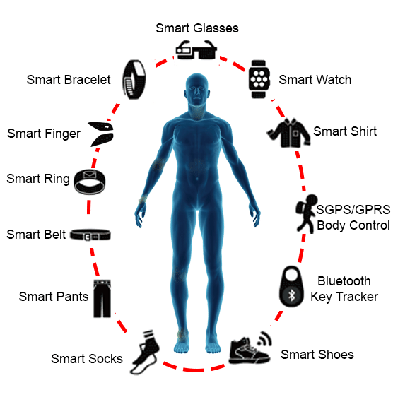

Wearable technologies are electronic devices that are designed to be worn on the body or clothing. They typically include sensors, processors, and wireless communication capabilities, and are often used for tracking and monitoring various aspects of the wearer's health, fitness, or activity levels. Some examples of wearable technologies include smartwatches, fitness trackers, smart clothing, and health monitoring devices. These devices can track things like heart rate, steps taken, calories burned, sleep patterns, and other biometric data. Wearable technologies can also be used for communication, entertainment, and productivity purposes. For example, smart glasses can display notifications and messages, while virtual reality headsets can be used for gaming and immersive experiences. Overall, wearable technologies are becoming increasingly popular as they allow people to track and monitor various aspects of their lives in a convenient and accessible way.
